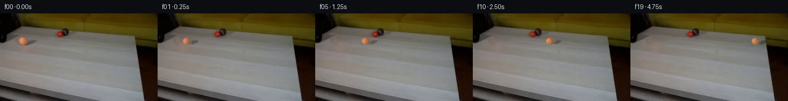

![首帧]()

Round 00
2026-11-05T01:30:09.644991+00:00像素候选变化代码 +168/−0inspection 更新
pixels bb4acb9da1c6934a · code d78e2cdc1a2a299d
查看本轮 generate.py 真实 diff
--- previous/generate.py
+++ current/generate.py
@@ -0,0 +1,168 @@
+"""PixelWorld-Text case_0012 generator.
+
+Scene: an orange tennis ball rolls straight right out of a black pipe across
+a light wooden coffee table. Locked-off camera; frame 00 is the untouched
+first frame. Method: analytic sprite extraction (AA ellipse sphere + soft
+contact shadow), TELEA inpainting of the vacated footprint with matched wood
+grain, per-frame stamping; shadow re-rendered multiplicatively. Local pixel
+operations only.
+"""
+from pathlib import Path
+import numpy as np
+from PIL import Image, ImageDraw
+from scipy.ndimage import gaussian_filter
+import cv2
+
+import artifact_io
+
+CASE = Path(__file__).parent
+rng = np.random.default_rng(20261105)
+
+# ---------------------------------------------------------------- geometry
+H, W = 144, 256
+CX0, CY = 39.6, 45.0 # sphere centre in frame 0
+RX, RY = 7.5, 6.2 # sphere radii
+SHX, SHY = 51.5, 47.0 # contact-shadow ellipse centre
+SRX, SRY = 7.8, 5.2
+SPEED = 8.65 # px / frame (constant)
+
+frame0 = np.array(Image.open(CASE / 'first_frame.png').convert('RGB'))
+assert frame0.shape == (H, W, 3)
+
+yy, xx = np.mgrid[0:H, 0:W].astype(np.float32)
+
+# sphere analytic alpha (antialiased rim ~1.2px)
+nsp = np.sqrt(((xx - CX0) / RX) ** 2 + ((yy - CY) / RY) ** 2)
+sphere_a = np.clip((1.0 - nsp) / 0.18, 0, 1)
+# shadow ellipse feather weight
+nsh = np.sqrt(((xx - SHX) / SRX) ** 2 + ((yy - SHY) / SRY) ** 2)
+shadow_w = np.clip((1.0 - nsh) / 0.30, 0, 1)
+shadow_w[nsp < 1.05] = 0.0 # sphere occludes the shadow core
+
+# ----------------------------------------- smooth wood background model
+# fit a bivariate cubic per channel on clean corridor pixels, used to know
+# the unshadowed wood colour under the frame-0 shadow
+poly_region = (xx >= 18) & (xx <= 216) & (yy >= 33) & (yy <= 62)
+exclude = ((nsp < 1.35) | (nsh < 1.30)
+ | ((xx > 86) & (xx < 115) & (yy < 40)) # red ball + dark mug
+ | ((xx < 34) & (yy < 41)) # pipe mouth
+ | (xx > 213)) # right furniture
+fitmask = poly_region & ~exclude
+Xf = xx[fitmask]; Yf = yy[fitmask]
+A = np.stack([np.ones_like(Xf), Xf, Yf, Xf*Xf, Xf*Yf, Yf*Yf,
+ Xf**3, Xf*Xf*Yf, Xf*Yf*Yf, Yf**3], axis=1)
+Ax = np.stack([np.ones_like(xx.ravel()), xx.ravel(), yy.ravel(),
+ xx.ravel()**2, xx.ravel()*yy.ravel(), yy.ravel()**2,
+ xx.ravel()**3, xx.ravel()**2*yy.ravel(),
+ xx.ravel()*yy.ravel()**2, yy.ravel()**3], axis=1)
+bg_model = np.zeros((H, W, 3), np.float32)
+for c in range(3):
+ coef, *_ = np.linalg.lstsq(A, frame0[fitmask, c].astype(np.float32), None)
+ bg_model[..., c] = (Ax @ coef).reshape(H, W)
+resid = frame0.astype(np.float32) - bg_model
+print('wood model residual on fit pixels: rms',
+ np.sqrt((resid[fitmask] ** 2).mean(axis=0)).round(2))
+
+# per-pixel shadow darkening factor k (observed / unshadowed wood)
+with np.errstate(invalid='ignore'):
+ k = np.clip(frame0.astype(np.float32) / bg_model, 0.45, 1.0)
+shadow_present = (shadow_w > 0) & (frame0.mean(2) < bg_model.mean(2) - 4)
+
+# ----------------------------------------- empty-table base via inpainting
+footprint = ((nsp <= 1.08) | (nsh <= 1.05)).astype(np.uint8)
+footprint = cv2.dilate(footprint, np.ones((3, 3), np.uint8)).astype(bool)
+inpainted = cv2.inpaint(frame0[:, :, ::-1].copy(),
+ footprint.astype(np.uint8), 5, cv2.INPAINT_TELEA)[:, :, ::-1]
+base = frame0.copy()
+base[footprint] = inpainted[footprint]
+
+# relight the inpainted patch toward the smooth wood model and add matched
+# low-amplitude grain so the fill does not read as a smooth plastic blob
+fill = footprint.copy()
+soft = gaussian_filter(fill.astype(np.float32), 1.2)
+mix = np.clip(soft, 0, 1)[..., None]
+base = (base.astype(np.float32) * (1 - 0.45 * mix)
+ + bg_model * (0.45 * mix)).clip(0, 255)
+grain = gaussian_filter(rng.standard_normal((H, W, 1)).astype(np.float32),
+ (1.1, 1.1, 0)) * 3.2
… diff truncated; 81 more lines …